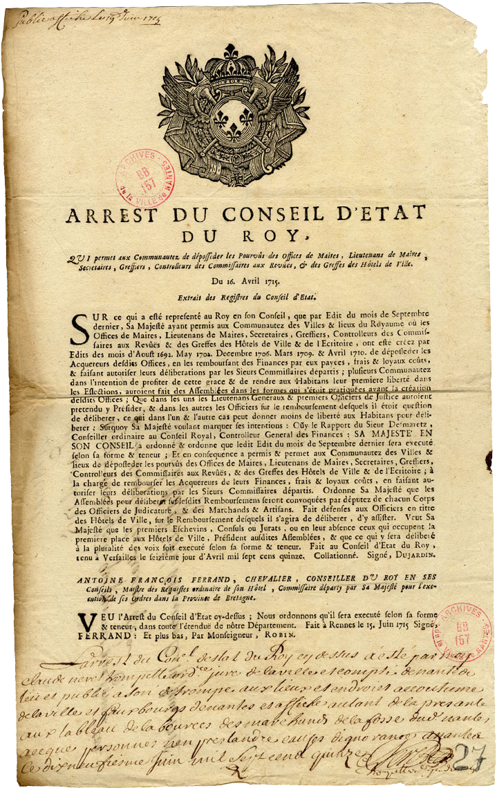

Arrest du conseil d'état du roy
Julien Proust, sieur du Port-Lavigne naquit à Bouguenais le 10 août 1665. Par un édit d’août 1692, Louis XIV supprima les anciens maires, remplaçant la charge élective de 1er magistrat de la Cité en un office héréditaire sous la dénomination de : conseiller du roi, maire perpétuel. Julien Proust acheta la charge de maire par lettres patentes du 14 août 1693 pour 60 020 livres et en prit possession le 13 septembre 1693. Il mourut à Rennes le 26 mai 1715. Alors la communauté de ville, désireuse de rentrer dans son droit d’élection, racheta la charge de maire à sa veuve Marie Letourneux pour la somme de 85 213 livres.